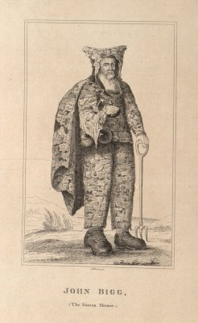

Friday, May the 11th, 2007
back to: title, date or indexes
I hope that all Hooting Yard readers have become devotees of the magnificent BibliOdyssey. Today the site has a particularly splendid set of Remarkable Persons:
“John Bigg, the Dinton Hermit, baptized 22nd of April, 1629, buried 4th of April, 1696. He lived [..] in a cave, had been a man of tolerable wealth, was looked upon as a pretty good scholar, and of no contemptible parts. Upon the restoration he grew melancholy, betook himself to a recluse life, and lived by charity, but never asked for any thing but leather, which he would immediately nail to his clothes. He kept 3 bottles that hung to his girdle, viz. for strong and small beer, and milk; his shoes are still preserved; they are very large, and made up of about a thousand patches of leather.”
